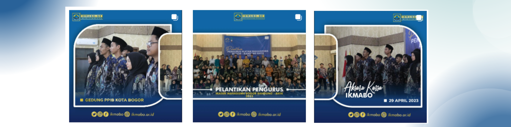
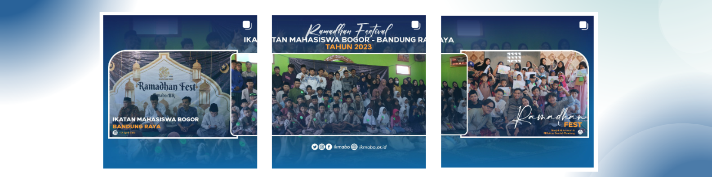

Sejarah
Ikatan Mahasiswa Bogor (Ikmabo) adalah organisasi yang didirikan pada tahun 1990 oleh sekelompok mahasiswa asal Bogor, awalnya dikenal sebagai Corp Ikatan Mahasiswa Bogor (CIMB). Meskipun memiliki sifat kedaerahan, Ikmabo bersikap terbuka dan melibatkan mahasiswa dari berbagai daerah, seperti Sukabumi dan Depok. Ikmabo memiliki banyak alumni, termasuk dari UIN SGD, Unjani, UPI, dan Unpad.
Pada sekitar tahun 2003, Ikmabo mendapatkan tambahan nama "BR" (Se-Bandung Raya) dalam AD/ART-nya. Organisasi ini aktif dalam berbagai kegiatan, seperti pembinaan SDM, bakti sosial, olahraga, kesenian, dan kewanitaan sesuai dengan amanat organisasinya.
Sekarang, Ikmabo masih aktif di Bandung dengan sekretariat di sekitar Kampus UIN SGD Bandung. Mereka telah meraih prestasi dalam bidang olahraga sepak bola dan mengadakan diskusi rutin, serta menerbitkan bulletin TALAS untuk mengembangkan bakat intelektual mahasiswa mereka.
Pelantikan

Pelantikan dan Halal Bihalal Ikatan Mahasiswa Bogor - Bandung Raya periode 2023-2024 adalah peristiwa istimewa yang menandai awal kepemimpinan baru.
Acara ini merayakan persatuan, dengan pengurus baru yang mengambil alih tanggung jawab organisasi dan anggota lama dan baru berkumpul untuk memperkuat persaudaraan.
Selama periode 2023-2024, mereka akan berjuang untuk mencapai tujuan dan visi organisasi.
Ramadhan

Ramadhan Festival di Bandung adalah perayaan penuh semangat dan persatuan selama bulan suci Ramadhan.
Festival ini melibatkan anak-anak dari berbagai latar belakang dalam kegiatan seni, budaya, dan sosial. Mereka menghiasi kota, belajar nilai-nilai seperti kebaikan dan kerjasama, serta memperkuat rasa persaudaraan.
Ramadhan Festival memperkaya pengalaman anak-anak dan mempromosikan keberagaman di Bandung.
Tasyakuran

Tasyakuran dan tumpengan di Bandung adalah momen berarti di mana masyarakat berkumpul untuk merayakan rasa syukur, solidaritas, dan persatuan.
Tasyakuran adalah ungkapan terima kasih kepada Tuhan, sementara tumpengan melibatkan hidangan bersama yang mempromosikan berbagi dan persatuan. Acara ini mencerminkan nilai-nilai budaya dan agama yang kuat, menciptakan kebahagiaan dan kebersamaan di tengah keramaian kota.
Ini adalah perayaan yang memperkaya budaya dan memperkuat kerukunan dalam masyarakat Bandung.
MSMB

Massa silaturahmi mahasiswa Bogor adalah perayaan persaudaraan dan persatuan mahasiswa dari Bogor dengan tujuan dan mimpi yang sama. Mereka berkumpul dengan semangat tinggi untuk berbagi pengalaman, pengetahuan, dan ide-ide yang memperkaya perjalanan akademik dan kehidupan mereka.
Acara ini juga mencakup kegiatan seperti seminar dan diskusi yang meningkatkan wawasan dan keterampilan mereka. Massa silaturahmi ini menciptakan ikatan erat di antara mahasiswa yang bersatu untuk memperjuangkan hak-hak mereka dan menjadi agen perubahan positif dalam masyarakat.
First Gathering

Fist Gathering Ikmabo adalah perayaan bersejarah yang membangun dasar kuat bagi persaudaraan dan kerja sama di antara anggota muda Ikatan Mahasiswa Bogor.
Acara ini menjadi titik awal perjalanan mereka yang penuh semangat, di mana mereka berbagi cerita, harapan, dan impian, serta menguatkan ikatan persahabatan. Selama acara ini, mereka merencanakan masa depan organisasi sambil mengekspresikan kreativitas dalam berbagai kegiatan. Fist Gathering mencerminkan semangat kepemudaan, visi, dan kolaborasi yang kuat di antara anggota, menandai awal yang menjanjikan untuk perjalanan yang penuh prestasi, pencapaian, dan persahabatan di Ikatan Mahasiswa Bogor (Ikmabo).